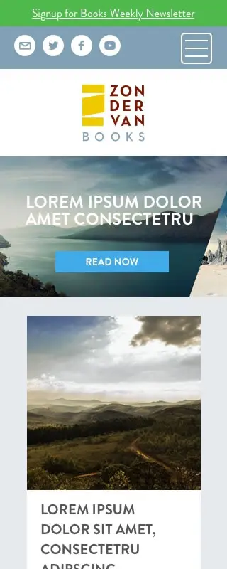
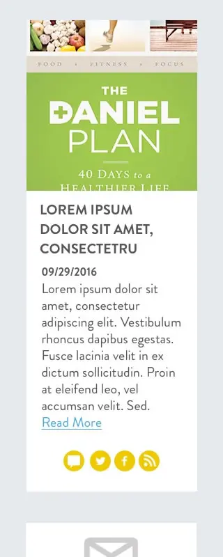

Zondervan Books Website
Design, Art Direction
The Zondervan trade team wanted to develop their brand and create a web identity. They also wanted to have a website to create a potential landing spot for driving ads and create engaging content to connect with their target audience. In the initial design, a blog site was designed with serene colors and imagery from nature, which reflected the expansiveness of the content while remaining approachable.

